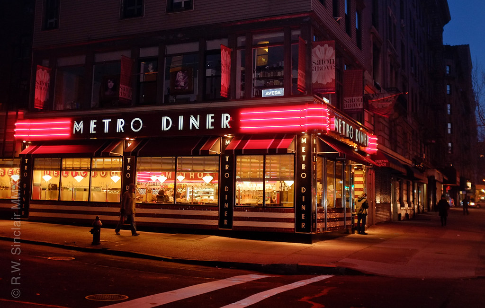
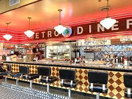
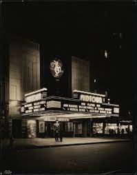

Welcome to my review of the best diner in New York City. Located on Broadway and 100th street, Metro Diner offers a wide range of foods and is perfect for those with a diverse palette. Across the street from the diner is the old Metro Theatre. While it is now closed, the iconic building still stands, with its large theatre faces overlooking Broadway, one can imangine themselves there as they stand.
😀 😄 😍 💗
Metro Diner
Metro Diner
Metro Theatre
